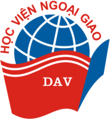

Chọn một lần, máy sẽ nhớ. Avatar DAV Receptionist đã được cài sẵn, không cần dán link.
Mở lại cài đặt: Shift+S, thêm ?setup vào link, hoặc giữ góc trên bên trái màn hình 3 giây.
Link mở thẳng một bố cục: ?layout=vertical · ?layout=horizontal.